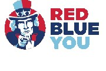

MORENO CUNHA
SOFTWARE DEVELOPER
Helping companies and entrepreneurs bring their ideas to life as web applications with Python/Django with a friendly smile since 2010.
- Moreno P. Cunha
- moreno.pinheiro (a) gmail com
- Vitória, Espírito Santo, Brazil
- moreno.pinheiro
- blog.morenopc.com
About me
-
My proudest professional achievement .
Back in 2009, I landed my proudest professional win. I joined AIESEC (at Vitória Federal University, UFES) as a volunteer with the objective of changing the world by changing myself by traveling abroad (exchange program). I snagged a super competitive software developer internship at GaiaX in Tokyo! Out of all the AIESEC members in 127 countries, they picked me after an intensive six-month selection process. That trip to Japan to join their web dev team as an intern shaped the skills I have today, both professional and personal. Later, I'm thrilled to be back on the GaiaX team, contributing to the research, creation, and development of the trustdock.io project.
-
How I can be helpful? .
I bring a strong balance between creativity and analytical thinking. This allows me to tackle complex challenges by approaching problems from both creative and logical angles. I consistently seek opportunities for learning and growth (reason I find my work so fulfilling). My passion lies in crafting solutions that improve efficiency and user experience. My research skills and ability to grasp intricate technical details make me a valuable asset to any project.
-
Plans to the future .
Working as a web developer in today's dynamic technological landscape is a true privilege. This role allows me to leverage my creativity and technical skills to bring ideas to life through innovative web applications. I thrive in collaborative environments where I can partner with individuals who share a passion for turning ideas and insights into reality. In my experience, a successful project requires a balance between technical expertise and creative vision.
-
Weak points
I don’t have fast (or memorized) answers for tough issues (or documentation contents) but, given a little time and dedication, I can work my way out of any problem.
Employment
-
Software Developer and Researcher 2016 - Dec/2017
Gaiax Co.Ltd. - Tokyo, Japan
Remote
Working with research, creation, and development (Django REST framework micro-service) of Trust Dock (identity verification service - trustdock.io) focused on blockchain, cryptography, web security, identity proofing, authentication, face recognition, and machine learning research.
Keywords: Django/Python, Django REST API, Microservices, Webhooks, JAVA (android), Solidity (ethereum), Heroku (server), AWS, Ansible, Research
-
Full-stack Web Developer (Django / Python) 2014 - 2016
UCL – Faculdade do Centro Leste - Serra, Brazil
On Site
Implement, configure, and maintain the first Portuguese version for the Open edX (Harvard/MIT) learning platform in Brazil called ESO (eso.org.br). Also being part of the python / django development team.
Keywords: Django/Python, Open edX Platform, JavaScript, AWS, Ansible, MySQL, PostgreSQL, MongoDB (NoSQL)
-
Full-stack Web Developer (Django / Python) 2012 - 2013
Giftovus, Inc. - San Diego, California, US
Remote
I was a member of the web development multicultural team (with four remote members from home in Brazil), talking in daily scrum meetings about UX jQuery new ideas, adding new technologies (APIs and GitHub Django apps), improving the code, and being responsible to the deployment process. (www.giftovus.com)
Keywords: Django/Python, Tastypie API, Backbone.js, jQuery, Bootstrap Front-end framework, Docker Cloud (server)
-
CTO / Full-stack Web Developer (Django/Python) 2010 - 2012
Instituto IDEAS - Vitória, Brazil
On Site
Invited to be part of the Institute IDEIAS' first IT division as a web developer. Later promoted to be responsible for manage: the telecommunication infrastructure and the web development team (based on scrum, kanban, and XP management). (institutoideias.com.br/site)
Keywords: Django/Python, Ruby on Rails, jQuery, HTML, CSS, Linode (server), MySQL
-
Web developer - Trainee 2010 - 2010
Gaiax Co.Ltd. - Tokyo, Japan
On Site
I was part of the IBD development team as an intern learning about commitment, discipline, teamwork, and the "modern" web frameworks like Catalyst/Perl and Django/Python. (gaiax.co.jp)
Keywords: Django/Python, Catalyst/Perl, Google App Engine, JavaScript, HTML5 (canvas), Shell Script, Apache, MySQL
Education
-
Technologist degree in Analysis and Systems Development2005 - 2009
Instituto Federal do Espirito Santo - Brazil
On Site
In addition to learning what was the basis of my technical knowledge today writing the code of my final graduation work in python was a big plus for my career. In the project (or "game") I try to emulate some network layers with Python (including routers, switches, and network cards) until it is possible to send and receive a "PING" signal. The challenge is to configure the network correctly to send and receive data (PING) and then learn a little about how a computer network works. (github.com/morenopc/python-network)
Keywords: Research, Programming logic, Web Development, Computer network, Software Engineering, Project management, C (language), JAVA, Python, Blender 3D
Courses
-
Ethereum Solidity Developer Masterclass 2017 - 2017
Thomas Wiesner and Ravinder Deol
Remote
Ethereum Blockchain Development course online helping you to build complex, real-world, Ethereum based distributed applications using solidity successfully.
Keywords: Solidity (ethereum), Ethereum Smart Contract, Blockchain
-
M101P: MongoDB for Developers 2014 - 2014
university.mongodb.com
Remote
Open edX format MongoDB for Developers course. https://dl.dropboxusercontent.com/u/2865713/courses/certificates/2014-09-28-M101P-mongodb-developers-certificate.pdf
Keywords: MongoDB (NoSQL)
-
Welcome to the Django - Henrique Bastos 2011 - 2011
welcometothedjango.com.br
Remote
Become the owner of your own business and learn Python/Django to meet customer demands. Best practices (TDD). Be part of the developer community, make friends, and be happy. (github.com/morenopc/eventex)
Keywords: Django/Python, Heroku (server), TDD (Unit Tests)
Web frameworks
-
Python / Django
-
Catalyst / Perl
-
Ruby on rails
JavaScript frameworks
-
AngularJS
-
React
-
Vue.js
Web design
-
LESS / Sass
-
CSS3
-
HTML5
-
Bootstrap
Best practices
-
TDD (Unit Tests)
-
PEP8 - Style Guide
-
Behave Tests
Other languages
-
Solidity (ethereum)
-
JAVA (android)
-
C
-
Shell Script
Deployment
-
Amazon AWS
-
heroku.com
-
Ansible
-
Docker
Servers
-
Apache
-
Nginx
-
Node.js
DataBases
-
MySQL
-
PostgreSQL
-
SQLite
-
MongoDB (NoSQL)
-
2018 Sydney, Australia (remote)
Django/Flask Security Challenges -
2016 Tokyo, Japan (remote)
Software Developer / Researcher -
2015 India, (remote)
(part-time) Web Developer -

2014 San Francisco, US (remote)
(part-time) Web Developer -
2014 Serra, Brazil (on site)
(Django / Open edX) Developer -

2014 Lisbon, Portugal (remote)
Django Developer -
2013 Vitória, Brazil (remote)
(Django) Web Developer -

2013 Vitória, Brazil (remote)
(Django) Web Developer -
2012 San Diego, US (remote)
(Django) Web Developer -
2011 Vitória, Brazil (on site)
Personal Django Project -
2011 Vitória, Brazil (on-site)
CTO / Full-Stack Web Developer -
2010 Tokyo, Japan (on site)
Software Developer (Trainee)


{kind=link}
{kind=link}
{kind=link}
{kind=link}
{kind=link}
{kind=link}
{kind=link}
{kind=link}
{kind=link}
{kind=link}
{kind=link}
{kind=link}
{kind=link}
{kind=link}
{kind=link}
{kind=link}
{kind=link}
{kind=link}
{kind=link}
{kind=link}
{kind=link}
{kind=link}
{kind=link}
{kind=link}
{kind=link}
{kind=link}
{kind=link}
{kind=link}
{kind=link}
{kind=link}
{kind=link}
{kind=link}
{kind=link}
{kind=link}
{kind=link}
{kind=link}